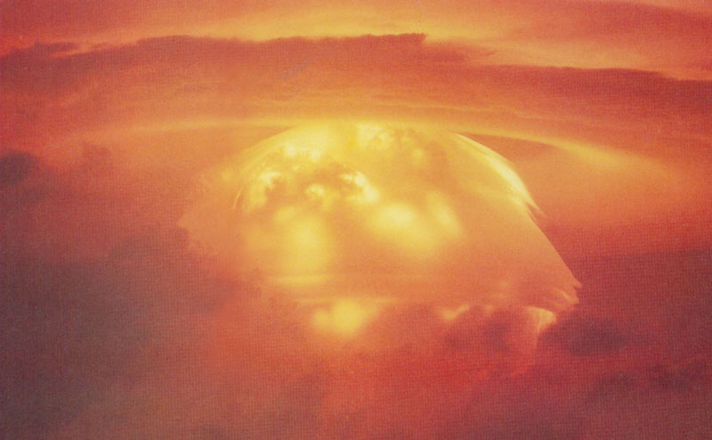

The physical effects
of nuclear testing

Selection of Atmospheric Nuclear Tests
→ Nutmeg
Test Date: 21 May 1958
Yield Range: 25.1 kt
Location: Yurochi aka Irioj,
Bikini Atoll
11.6915 165.41582°E
→
MapleYield Range: 25.1 kt
Location: Yurochi aka Irioj,
Bikini Atoll
11.6915 165.41582°E
Test Date: 10 Jun 1958
Yield Range: 213 kt
Location: Yurochi aka Irioj,
Bikini Atoll
11.6915°N 165.41582°E
→
RedwoodYield Range: 213 kt
Location: Yurochi aka Irioj,
Bikini Atoll
11.6915°N 165.41582°E
Test Date: 27 Jun 1958
Yield Range: 412 kt
Location: Yurochi aka Irioj,
Bikini Atoll
11.6915°N 165.41582°E
Yield Range: 412 kt
Location: Yurochi aka Irioj,
Bikini Atoll
11.6915°N 165.41582°E
→ Diablo
Test Date: 15 July 1957
Yield Range: 74 kt
Location: Nevada Test Site,
Area B9a
37.1347°N 116.0417°W
→
Rainier Yield Range: 74 kt
Location: Nevada Test Site,
Area B9a
37.1347°N 116.0417°W
Test Date: 19 September 1957
Yield Range: 1.7 kt
Location: Nevada Test Site,
Area U12b
37.19573°N 116.20404°W
Yield Range: 1.7 kt
Location: Nevada Test Site,
Area U12b
37.19573°N 116.20404°W
→ Housatonic
Test Date: 30 October 1962
Yield Range: 8.3 Mt
Location: Johnston Island,
Johnston Atoll
13.7°N 172.2°W
→
Harlem Yield Range: 8.3 Mt
Location: Johnston Island,
Johnston Atoll
13.7°N 172.2°W
→ Muskegon
→ Chetco
→ Bighorn
Test Date: 27 June 1962
Yield Range: 7.7 Mt
Location: Johnston Island,
Johnston Atoll
1.37°N 157.24°W
→
Androscoggin Yield Range: 7.7 Mt
Location: Johnston Island,
Johnston Atoll
1.37°N 157.24°W
Test Date: 2 October 1962
Yield Range: 75 kt
Location: Johnston Island,
Johnston Atoll
13.8°N 172.1°W
→
Swanee Yield Range: 75 kt
Location: Johnston Island,
Johnston Atoll
13.8°N 172.1°W
→ Petit
→ Pamlico
→ Tesla
→ Turk
→ Rushmore
Test Date: 22 October 1958
Yield Range: 0.188 kt
Location: Nevada Test Site,
Area 9a
37.1383°N 116.1184°W
Yield Range: 0.188 kt
Location: Nevada Test Site,
Area 9a
37.1383°N 116.1184°W
→ Ray
Test Date: 11 April 1953
Yield Range: 200 kt
Location: Nevada Test Site,
Area 4
37.09889°N 116.09332°W
Yield Range: 200 kt
Location: Nevada Test Site,
Area 4
37.09889°N 116.09332°W
1
Nuclear weapons have been tested in all environments since 1945: in the atmosphere, underground and underwater. Tests have been carried out onboard barges, on top of towers, suspended from balloons, on the Earth’s surface, more than 600 metres underwater and over 200 metres underground. Nuclear test bombs have also been dropped by aircraft and fired by rockets up to 320 km in the air.
The National Resources Defence Council estimated the total yield of all nuclear tests conducted between 1945 and 1980 at 510 megatons (Mt). Atmospheric tests accounted for approximately 428 mt, equivalent to over 29,000 Hiroshima size bombs.
The first nuclear test was carried out by the United States in July 1945, followed by the Soviet Union in 1949, the United Kingdom in 1952, France in 1960, and China in 1964. The National Resources Defence Council estimated the total yield of all nuclear tests conducted between 1945 and 1980 at 510 megatons (Mt). Atmospheric tests alone accounted for 428 mt, equivalent to over 29,000 Hiroshima size bombs.
The amount of radioactivity generated by a nuclear explosion can vary considerably depending upon a number of factors. These include the size of the weapon and the location of the burst. An explosion at ground level may be expected to generate more dust and other radioactive particulate matters than an air burst. The dispersion of radioactive material is also dependent upon conditions.
Large amounts of radionuclides dispersed into the atmosphere
2
The 2000 Report of the United Nations Scientific Committee on the Effects of Atomic Radiation to the General Assembly states that: “The main man-made contribution to the exposure of the world's population [to radiation] has come from the testing of nuclear weapons in the atmosphere, from 1945 to 1980. Each nuclear test resulted in unrestrained release into the environment of substantial quantities of radioactive materials, which were widely dispersed in the atmosphere and deposited everywhere on the Earth’s surface.”
The first nuclear test was carried out by the United States in July 1945, followed by the Soviet Union in 1949, the United Kingdom in 1952, France in 1960, and China in 1964.
Prior to 1950, only limited consideration was given to the general health impacts of worldwide dispersion of radioactivity from nuclear testing. Public protests in the 1950s and concerns about the radionuclide strontium-90 and its effect on mother’s milk and babies’ teeth were instrumental in the conclusion of the Partial Test Ban Treaty (PTBT) in 1963. The PTBT banned nuclear testing in the atmosphere, outer space and under water, but not underground, and was signed by the United States, the Soviet Union and the United Kingdom. However, France and China did not sign and conducted atmospheric tests until 1974 and 1980 respectively. Although underground testing mitigated the problem of radiation doses from short-lived radionuclides such as iodine-131, large amounts of plutonium, iodine-129 and caesium-135 were released underground. In addition, exposure occurred beyond the test site if radioactive gases leaked or were vented.
Gradual increase in knowledge about dangers of radiation exposure
Over the past century, there has been a gradual accumulation of knowledge about the hazards of radioactivity. It was recognised early on that exposure to a sufficient radiation dosage could cause injuries to internal organs, as well as to the skin and the eyes.
According to the 2000 Report of the United Nations Scientific Committee on the Effects of Atomic Radiation to the UN General Assembly, radiation exposure can damage living cells, killing some and modifying others. The destruction of a sufficient number of cells will inflict noticeable harm on organs which may result in death. If altered cells are not repaired, the resulting modification will be passed on to further cells and may eventually lead to cancer. Modified cells that transmit hereditary information to the offspring of the exposed individual might cause hereditary disorders. Vegetation can also be contaminated when fallout is directly deposited on external surfaces of plants and absorbed through the roots. Furthermore, people can be exposed when they eat meat and milk from animals grazing on contaminated vegetation.
Radiation exposure has been associated
with most conditions of leukaemia, as well as cancer of the thyroid, lung and breast.
Studies reveal link between nuclear weapon testing and cancer
3
The American Cancer Society’s website explains how ionising radiation, which refers to several types of particles and rays given off by radioactive materials, is one of the few scientifically proven carcinogens in human beings. Radiation exposure has been associated with most forms of leukaemia, as well as cancer of the thyroid, lung and breast. The time that may elapse between radiation exposure and cancer development can be anything between 10 and 40 years. Degrees of exposure regarded as tolerable in the 1950s are now recognised internationally as unsafe.
An article featured in Volume 94 of American Scientist on Fallout from Nuclear Weapons Tests and Cancer Risks states that a number of studies of biological samples (including bone, thyroid glands and other tissues) have provided increasing proof that specific radionuclides in fallout are implicated in fallout-related cancers. It is difficult to assess the number of deaths that might be attributed to radiation exposure from nuclear testing. Some studies and evaluations, including an assessment by Arjun Makhijani on the health effects of nuclear weapon complexes, estimate that cancer fatalities due to the global radiation doses from the atmospheric nuclear testing programmes of the five nuclear-weapon States amount to hundreds of thousands. A 1991 study by the International Physicians for the Prevention of Nuclear War estimated that the radiation and radioactive materials from atmospheric testing taken in by people up until the year 2000 would cause 430,000 cancer deaths, some of which had already occurred by the time the results were published. The study predicted that roughly 2.4 million people could eventually die from cancer as a result of atmospheric testing.
Measuring radiation doses and
biological risks
Scientists use different terms when measuring radiation. The terms can either refer to radiation from a radioactive source, the radiation dose absorbed by a person, or the risk that a person will suffer health effects from exposure to radiation. When a person is exposed to radiation, energy is deposited in the body’s tissues. The amount of energy deposited per unit of weight of human tissue is called the absorbed dose. This is measured using the rad or the SI Gy. The rad, which stands for radiation absorbed dose, has largely been replaced by the Gy. One Gy is equal to 100 rad.
The curie (symbol Ci) is a unit of radioactivity. It has largely been replaced by the Becquerel, which is the unit of radioactivity. One Becquerel is defined as the number of atoms which decay per second in a sample. The curie unit is named after Marie and Pierre Curie, who conducted pioneering research on radiation.
A person's biological risk (i.e. the risk that a person will suffer health effects from an exposure to radiation) is measured using the conventional unit rem or the SI unit Sv.
→
More readings
Words from APN / NZ Herald
Words from Sergei Ryabkov and
Lassina Zerbo
Lassina Zerbo
Words from Lee S. Langston
Words from The Guardian
Words from Fenella Saunders
Words from Chris Pleasance and
Fionn Hargreaves
Fionn Hargreaves